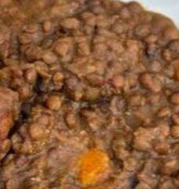

Comida tradicional
alicantina
‹ Todas las recetas
Lentejas (crockpot)

Ingredientes
140 g de lenteja rápida
10 rodajas de chorizo sarta
½ cebolla
1 patata
1 zanahoria
1 chorro de tomate frito
3 hojas de laurel
4 dientes de ajo
5 clavos
1 cucharadita de pimentón picante
½ cucharadita de comino
6 granos de pimienta
½ pastilla de caldo de verduras
Preparación
En la crockpot.
Meter
todo
en la crockpot. Añadir
sal
, un chorro de
aceite de oliva
y
¾ de vaso de agua
. Dejar 4 h en
high
y reposar 10 min antes de servir.